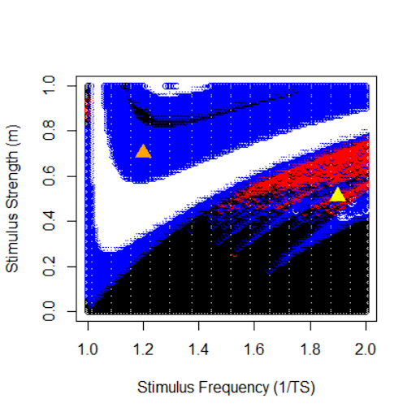
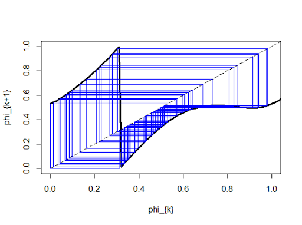

DBS Modeling
Simulated basal ganglia neurons with Leaky Integrate-and-Fire models to assess chaotic desynchronization of neuron networks and optimize stimulus parameters for deep brain stimulation. Learned how to use R and got my first introductions to dynamical systems!


Made with Adrian Liu, Ananya Dasaka, and Samarth Shekhar.